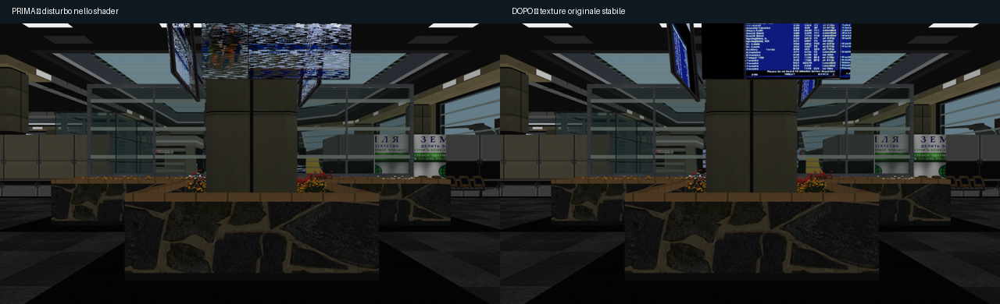
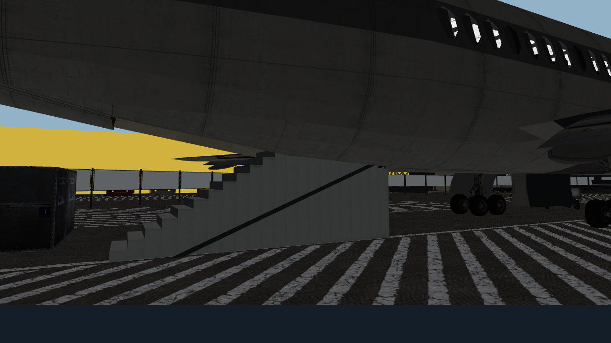
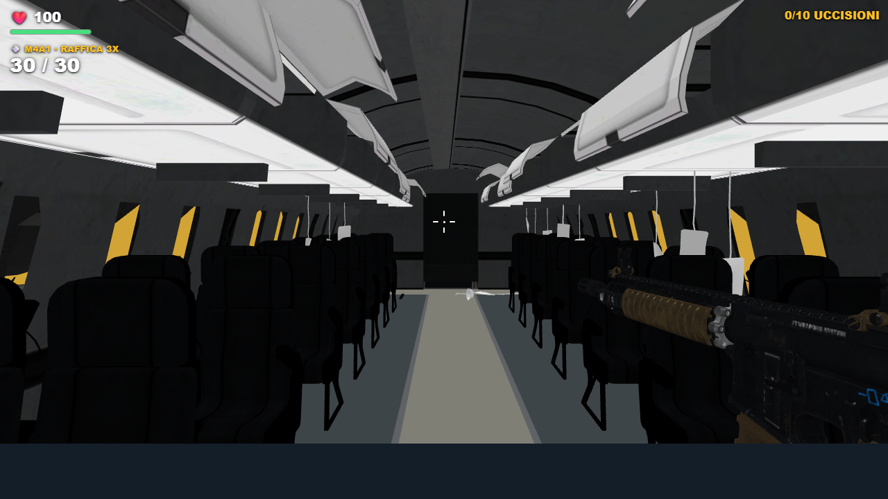
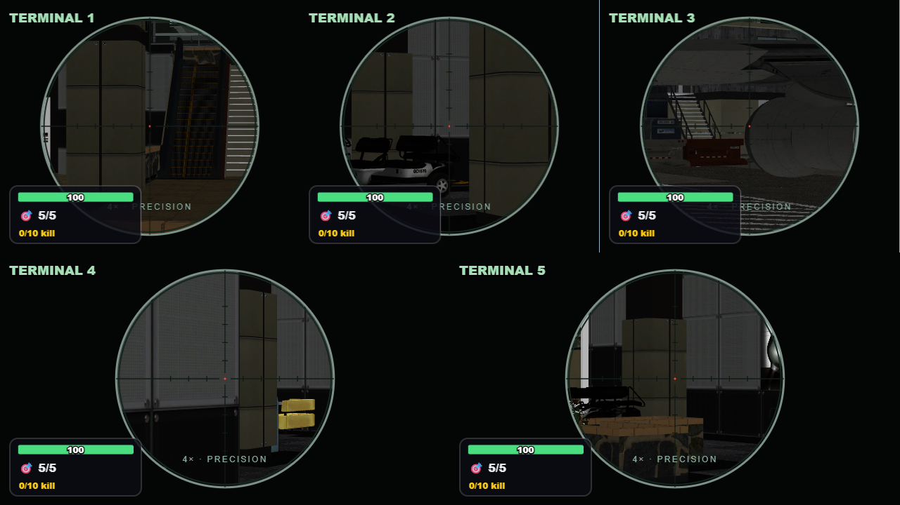

Terminal 2.2
Cartelloni stabili, materiali riparati e accesso alla cabina dalle scale posteriori e dallo scivolo gonfiabile. Sei armi, con la sola Ray Gun rossa.

Cartellone prima e dopo: corretti il flag alpha interpolato e gli assi UV del pannello.
Materiali dell’aereo e scala posteriore visibile, coerente con le collisioni.
M4A1 in cabina: luce dedicata, inquadratura e statistiche conservate.
Sniper ADS 4× nelle cinque visuali.Campione RTX 3050, 1280×720, cinque visuali, scala 1: 36,9 → 41,2 FPS. Misura breve nelle stesse posizioni; non rappresenta tutte le situazioni di gioco.